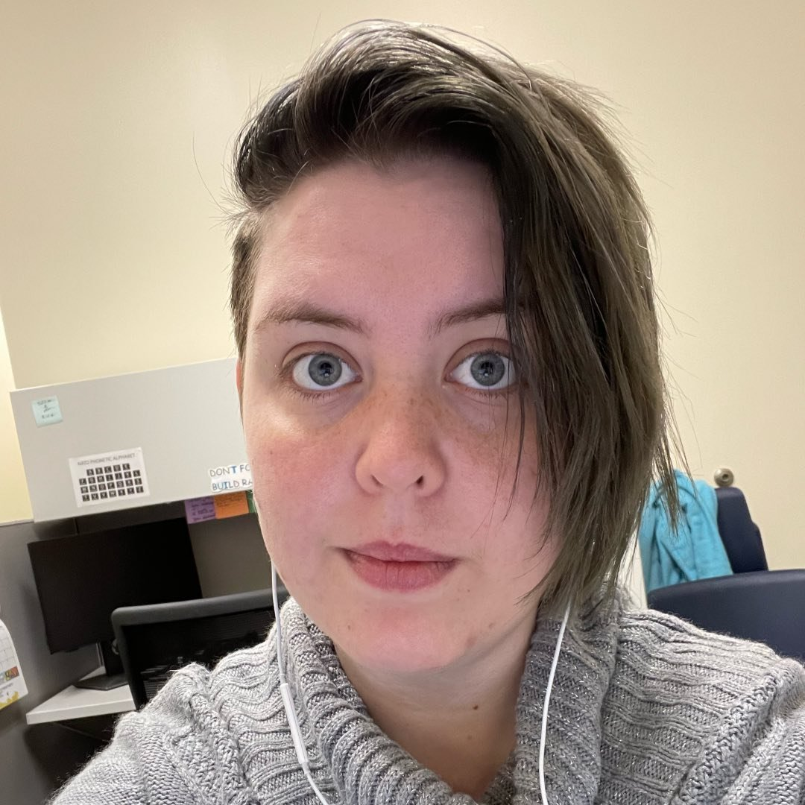

Welcome to my website!
Hello! My name is Ace, and I’m here to help make tech literacy more accessible. I’m currently enrolled in Atlas School’s machine learning program, and I’m set to graduate in the spring of 2025. I’ve worked as a Student Tutor for the past year, and before that I’ve had other jobs in tech and taken other classes. I have extensive experience with spreadsheets (both Google Sheets and Excel,) and I’m well versed with C, Python (tensorflow, numpy, matplotlib, ect) and Visual Basic Applications.
I see Data Science as one of the most important fields with some of the most important tools for the advancement of society. With technology and algorithms being such a regular part of day to day life, it’s important that we have all hands on deck understanding and teaching the mechanics behind such things. I believe in the regularization of AI, and I aim to be an AI ethicist. Biased data sets and studies have been built in a weaponized fashion against minorities over decades, and social media algorithms have acted as a catalyst in radicalization. We now live in a day that sees creative professional’s jobs at risk, including artists, animators, music producers, and the like. I believe we can see AI coexist with humanity, so long as we consider what is best for the everyday common man, rather than the wealth of the few.
When I’m not spending time working on technical things, I’m learning how to function as a young adult! I have a sourdough starter that I started over a year ago, as baking bread was more fiscal than purchasing it. Since then it’s become a regular part of my at-home schedule. I've gotten pretty good at grocery shopping, which means I've had more opportunity to be experimental with food. I listen to a lot of video game OSTs, make bracelets, watch cartoons, and play Pokemon Go with my brother and friends!